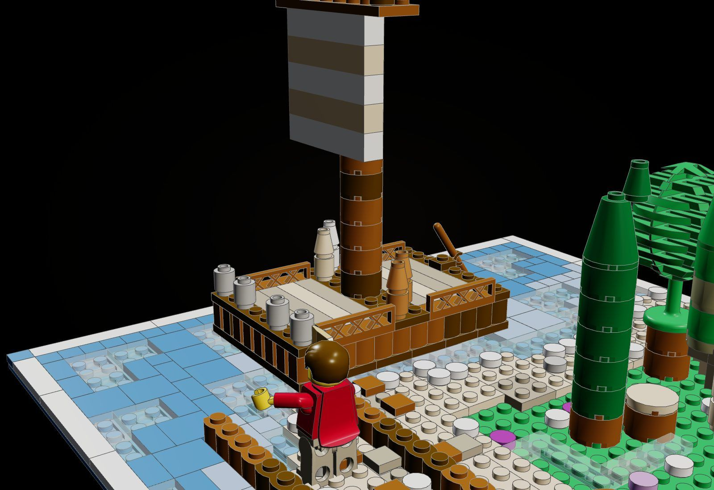
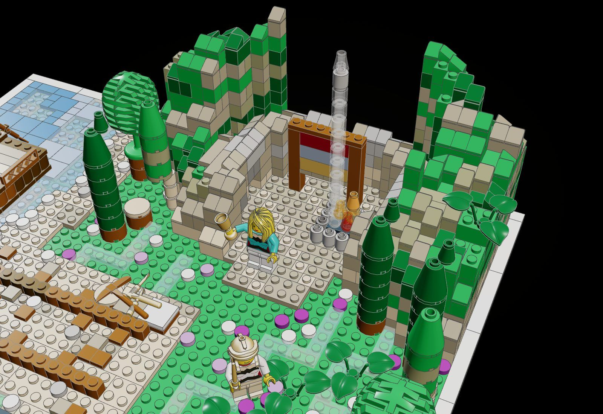
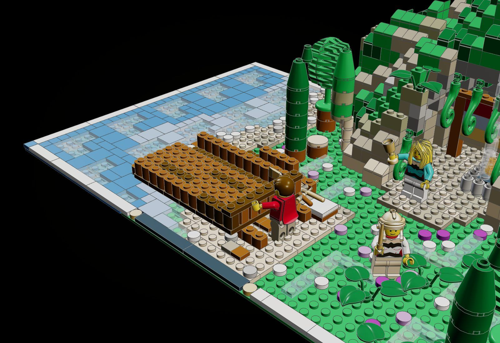
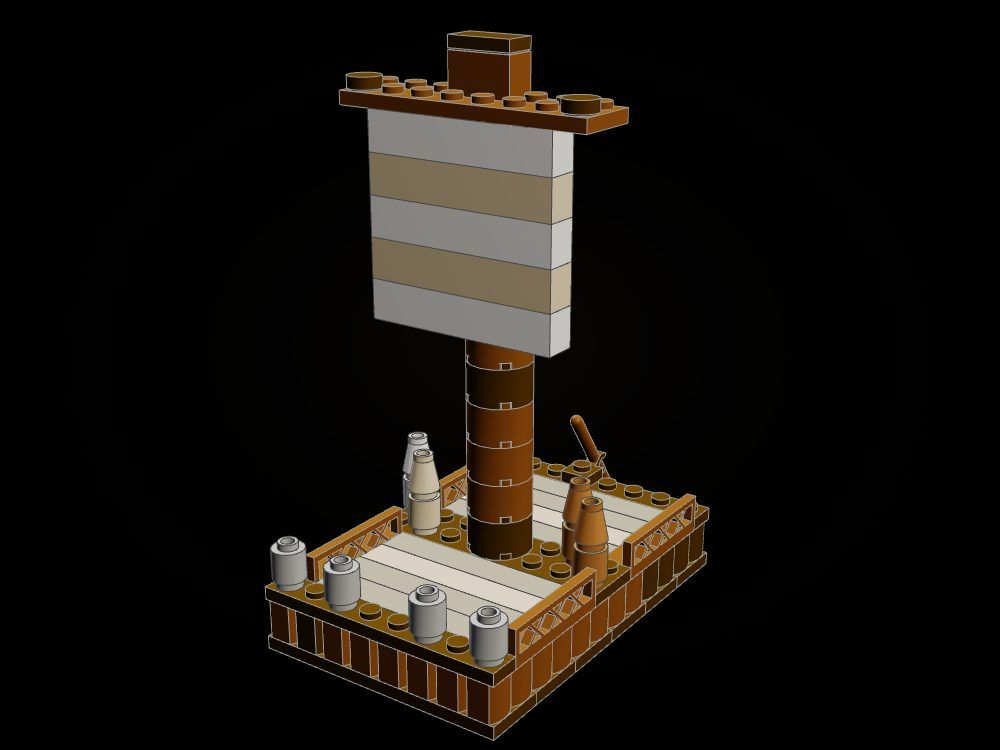
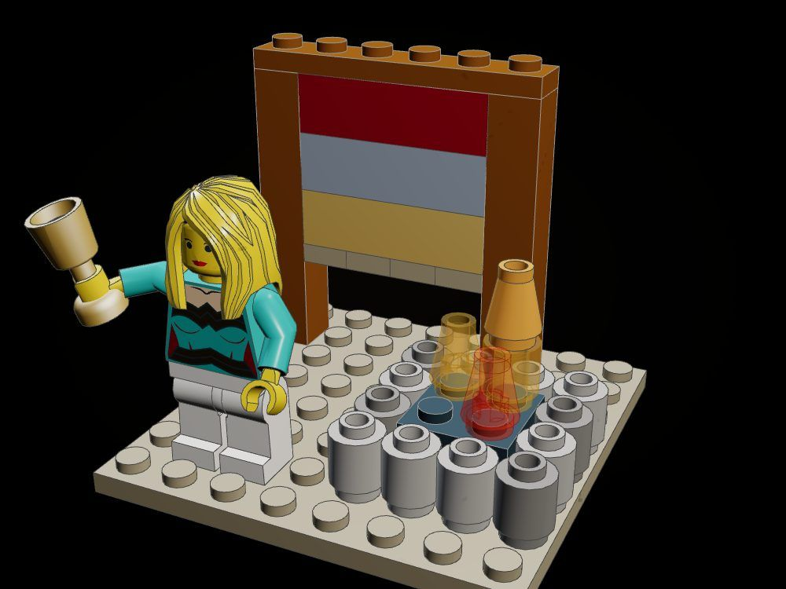
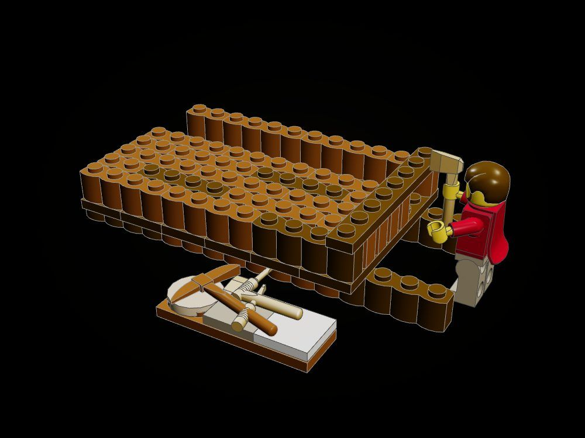

The Odyssey Line · Large · Book V · 1,642 pieces
Calypso's Isle and the Raft
On Ogygia, with the gods' decree just brought by Hermes, Odysseus builds his raft on the shore with the tools Calypso gave him while she watches from the mouth of her cave.
"Twenty trees in all did he fell, and trimmed them with the axe; then he cunningly smoothed them all and made them straight to the line." (Odyssey V, tr. A. T. Murray)

The object
The raft: log bricks laid on a keel of plates and lashed with cross-beams, decked with planks, railed, a mast of round bricks with a yard and a square sail, and a steering oar. It comes off its slipway and floats on the tile sea; the second card shows it half built on the ways.



How it is built
- The raft is really built: eight rows of log bricks on six 2 x 8 plates, lashed by end beams, a deck of planks, a wicker rail, an eleven-brick mast, a yard with the sail hanging from it, and a steering oar in a clip.
- Afloat it rests on smooth tiles, as a boat on water, and lifts off; on the ways it clicks down onto two runners of log bricks.
- The hill is sculpted: brick courses bonded crosswise, patchy greens over tan stone, every top the sky sees finished in tiles or cheese slopes, turf patches keeping their studs for plants.
- The cave roof lifts away to show the loom (posts, beam, a web in three colours, clay weights) and the hearth, whose cedar smoke rises as a column of clear round bricks through a vent in the roof.
- Four springs run in trans-clear and trans-light-blue tiles, turned one this way, one that, through a grove of cypress, poplar and alder.
- The beach carries chips from the adze, shells and pebbles; foam of white round tiles lines the waterline.
The builds inside the build

The raft
The raft alone, complete: stands on its keel plates.

Calypso's hearth and loom
The loom and the hearth on an 8 x 8 plate, with Calypso.

The tools and the slipway
The runners, the raft half built on them, the board of tools, Odysseus with the axe.
What the checker says
| Build | File | Pieces | Loose | Clashes |
|---|---|---|---|---|
| The island with the raft afloat | set.calypso-raft | 1,642 | 0 | 0 |
| The raft half built on the slipway | set.calypso-raft-building | 1,589 | 0 | 0 |
| The roof of the cave lifted away | set.calypso-raft-open | 1,331 | 0 | 0 |
| The raft | set.calypso-raft-raft | 84 | 0 | 0 |
| Calypso's hearth and loom | set.calypso-raft-hearth-loom | 39 | 0 | 0 |
| The tools and the slipway | set.calypso-raft-tools-slipway | 56 | 0 | 0 |
In the film


Still to do
- The square sail is a flat wall of 1 x 6 bricks; a cloth sail on a yard would read softer.
- The vines over the mouth are curled vines (1997) hung from clip plates; they read as hooks from some angles.
- Figures, the tools laid on the board, the vines and the steering oar are placed by hand and not verified by the click checker.
- The cave interior is only seen well with the roof lifted.